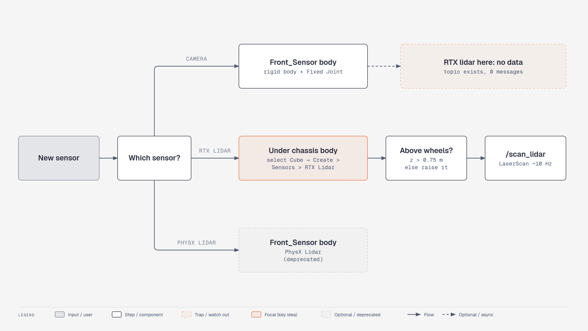

Lesson 1.3: Adding Sensors (Isaac Sim 6.1)#
Course page: Building Your First Robot → Adding Sensors (…/03-adding-sensors.html)
Goal: mount an RGB camera and a 2D lidar on the robot and look at what they see.
Checkpoint script: scripts/m1_ros2_lidar.py (also covers lesson 1.4)
Expected result: an RTX 2D lidar on the chassis publishes /scan_lidar at ~10 Hz, and its forward beam reads 2.50 m to an obstacle placed 2.50 m ahead.
🔄 Biggest change in this module. The course uses a PhysX Lidar (Create > Sensors > PhysX Lidar > Rotating). In 6.1 that extension is deprecated (
extsDeprecated/isaacsim.sensors.physx). It still appears in the menu, but this lesson uses its replacement, an RTX Lidar with the 2D config Example Rotary 2D. If you want to follow the video exactly, the PhysX steps are in the collapsible section at the end.
You will learn to
- Mount a camera on a fixed-jointed sensor body
- Add an RTX lidar (the 6.1 replacement of the PhysX lidar) in a place where it works
- Understand how RTX sensors see the scene (rendering, not physics)

Concepts#
Two kinds of lidar. The course's PhysX lidar casts physics rays — it only hits colliders.
Isaac Sim 6.1's RTX lidar is simulated by the RTX renderer — it hits everything rendered, models
real sensor scan patterns (vendor configs like Ouster, Hesai, SICK) and outputs a GenericModelOutput
buffer that helper nodes turn into LaserScan / PointCloud2.
Sensors ride on bodies. A sensor prim follows whatever body it is parented to. Under a rigid body it moves with that body; under a plain Xform beside the bodies it stays behind when the robot drives off.
The 6.1 trap. An RTX lidar under a separate rigid body that is fixed-jointed to the chassis produced
no output in our tests (topic exists, zero messages). Under the chassis body itself it works. Nova Carter
mounts all its sensors that way (chassis_link/sensors/...), so do the same.
Units under a scaled parent. Cube is scaled (2, 1, 0.5). A child's Translate is multiplied by that
scale: (0.45, 0, 1.0) → 0.9 m forward, 0.5 m up. The ranges the lidar reports are still in metres
(verified: an obstacle 2.50 m ahead reads 2.50 m).
Part 1: Sensor mount (Front_Sensor)#
- Right-click SimpleRobot → Create > Xform. Rename it Front_Sensor.
- Move it to the top front of the body: Translate (0.9, 0, 0.35) (relative to SimpleRobot).
- Right-click Front_Sensor → Add > Physics > Rigid Body. Known issue (also in the course): if Rigid Body can't be added, temporarily move Front_Sensor's children out, add it, then move them back.
- Fixed joint to the chassis: click Cube, Ctrl+click Front_Sensor → right-click → Create > Physics > Joint > Fixed Joint. Check Body 0 = Cube and Body 1 = Front_Sensor. If they're swapped, fix them with the folder icon.
- Right-click Front_Sensor → Create > Mesh > Cube, set Scale (0.1, 0.1, 0.1), and rename it Sensor_Mount. (The course also adds Rigid Body with Colliders Preset to Sensor_Mount. A collider is enough. A second rigid body nested inside Front_Sensor isn't needed.)
Part 2: RGB camera#
- Right-click Sensor_Mount → Create > Camera. Rename it Robot_Camera.
- Point it forward: Rotate Y = −90 (the course value). If the image is upside down or sideways, set Rotate to (90, −90, 0) instead (the value lesson 2.3 uses for Carter).
- Move it to the front edge of the mount.
- Look through it: at the top of the viewport, open the camera menu (shows Perspective) → Cameras > Robot_Camera. Switch back to Perspective when you're done. Tip: while you look through Robot_Camera, RMB+WASD moves the camera prim. Switch back before navigating.
- Add some obstacles: Create > Mesh > Cube / Cone / Cylinder, spread out in front of the robot.
- Two views at once:
🔄 Window > Viewports > Viewport 2 (4.2: Window > Viewport > Viewport 2). Set Viewport 1 to Perspective and Viewport 2 to Robot_Camera.
- Play and drive with W A S D. The camera view follows the robot.
Part 3: 2D lidar (RTX)#
⚠️ 6.1 trap, found while testing this lesson. The course puts the lidar on Front_Sensor, a separate rigid body held by a Fixed Joint. In 6.1 an RTX lidar mounted on a fixed-jointed body publishes nothing (no errors, just no data). It works when the lidar sits directly on the chassis body, which is also how NVIDIA's Nova Carter mounts its sensors. The camera from Part 2 is fine on Front_Sensor.
- Select Cube (the chassis rigid body).
- 🔄 Create > Sensors > RTX Lidar > NVIDIA > Example Rotary 2D
(4.5 course: Create > Sensors > PhysX Lidar > Rotating). It's created as a child of Cube, named
Example_Rotary_2D. - Set its Translate = (0.45, 0, 1.0). These are Cube-local units. Cube is scaled (2, 1, 0.5), so this means 0.9 m forward and 0.5 m above the chassis centre (≈ 0.875 m above the ground). Why this high? The wheel tops are at 0.75 m. A lidar below that sees the robot's own wheels (tested: at 0.725 m the closest "obstacle" was the rear wheel).
- Seeing the beams. RTX lidars don't have the PhysX Draw Lines / Draw Points checkboxes.
Ways to see the data:
* lesson 1.4: publish to ROS 2 and view it in RViz (what the course does next anyway), or
* from Python: attach the
draw-point-cloudwriter:python # Window > Script Editor, with the simulation stopped from isaacsim.sensors.experimental.rtx import Lidar, LidarSensor lidar = Lidar("/World/SimpleRobot/Cube/Example_Rotary_2D") sensor = LidarSensor(lidar, annotators=[]) sensor.attach_writer("draw-point-cloud", size=0.05, color=[1.0, 0.2, 0.2, 1.0])Then press Play. Red points appear where the beams hit. - Obstacle detection: an RTX lidar sees every rendered surface, so the obstacles show up even without colliders. That's different from the PhysX lidar in the course. Still give them Add > Physics > Rigid Body with Colliders Preset, so the robot can't drive through them.
- File > Save.
Placing prims by script? Prims made with Create > Mesh have translate / orient / scale ops.
UsdGeom.XformCommonAPI(prim).SetTranslate(...)silently does nothing on them. Setprim.GetAttribute("xformOp:translate").Set(...)instead. (This bit us while writing the checkpoint script.)
Course-exact alternative: PhysX Lidar (deprecated in 6.1)
- Select Front_Sensor → Create > Sensors > PhysX Lidar > Rotating (the PhysX lidar is fine on Front_Sensor; the trap above is RTX-only).
- Stop the simulation, select the lidar, open Raw USD Properties, and tick drawLines and drawPoints.
- Play. Gray beams mean no hit, red beams mean a hit. PhysX lidar beams only hit colliders, so the obstacles need Rigid Body with Colliders Preset.
- Slow the rotation (rotationRate) to inspect the beams. Raise the lidar if it hits the wheels.
Expect a deprecation warning in the console. The ROS 2 graph for this sensor (Isaac Read Lidar Beams,
isaacsim.sensors.physx.IsaacReadLidarBeams) is also deprecated.
Check your result#
| Do this | You should see |
|---|---|
| Viewport → Cameras → Robot_Camera | you see the scene from the robot's front |
| Drive with W while in Viewport 2 = Robot_Camera | camera view moves with the robot |
| Lidar prim type in Property panel | OmniLidar, under /World/SimpleRobot/Cube |
m1_ros2_lidar.py --headless --test |
forward beam = 2.50 m … PASS |
Exercises#
- Lower the lidar to Translate z = 0.7 and look at the scan in RViz (lesson 1.4). Where do the extra close points come from?
- Swap Example Rotary 2D for Create > Sensors > RTX Lidar > Ouster > OS1 and publish Point Cloud instead of Laser Scan.
- Put a cone behind a glass-like thin plane without a collider. Which lidar type would see the plane — PhysX or RTX?
Quiz#
-
Does an RTX lidar need colliders on obstacles to detect them?
Answer
No — it renders the scene; colliders only matter for physical contact. -
Where must the RTX lidar be mounted on SimpleRobot in 6.1?
Answer
Directly under the chassis rigid body (Cube), not on the fixed-jointed Front_Sensor. -
Why place the lidar above 0.75 m?
Answer
Below the wheel tops the scan hits the robot's own wheels.